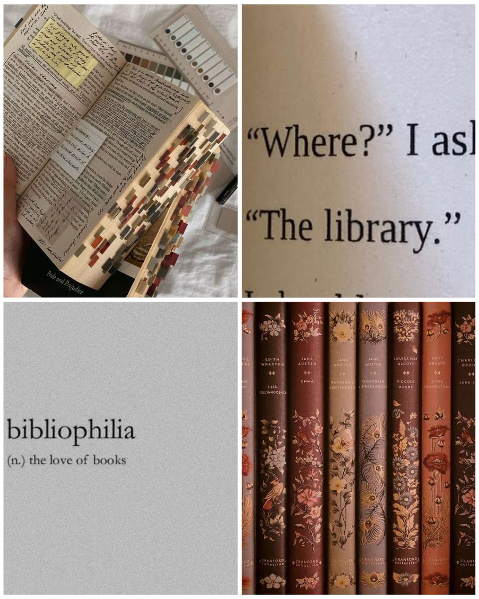

READING

Reading has been a hobby of mine ever since I was a child. I was a stutterer, a bad one and I had to overcome this weakness of mine for I was elected to recite the Rukun Negara every morning at my preschool. My mother, adamant to not let one of her children fail not on her watch, decided to grill me into reading out loud so that I could vanish my own stutter.
Years later, here I am, a certified bookworm.
LISTENING TO MUSIC
Her music and lyricism, she knows how to weave songs into stories and that makes me a fan of her for a very long time. Her songs has aspired and lifted me whenever I am feeling down as well as making me feel empowered, too.
His songs are radical, historically-based and Irish. What more?
Her songs are the definition of pop plus dirty humour as well as just fun in general. Yet, she not only writes funky pop songs that are easily to remember, Ms. Carpenter also a star in writing sad ballads and we girls, we just understand it.
Olivia is the quintessential teenage girl; angry yet she has to fake it by being a ball of sunshine, unsure of her future and reminisces of her childhood. She reminds me of my own teenager self, and the fact that she is the same age as me makes it even better.